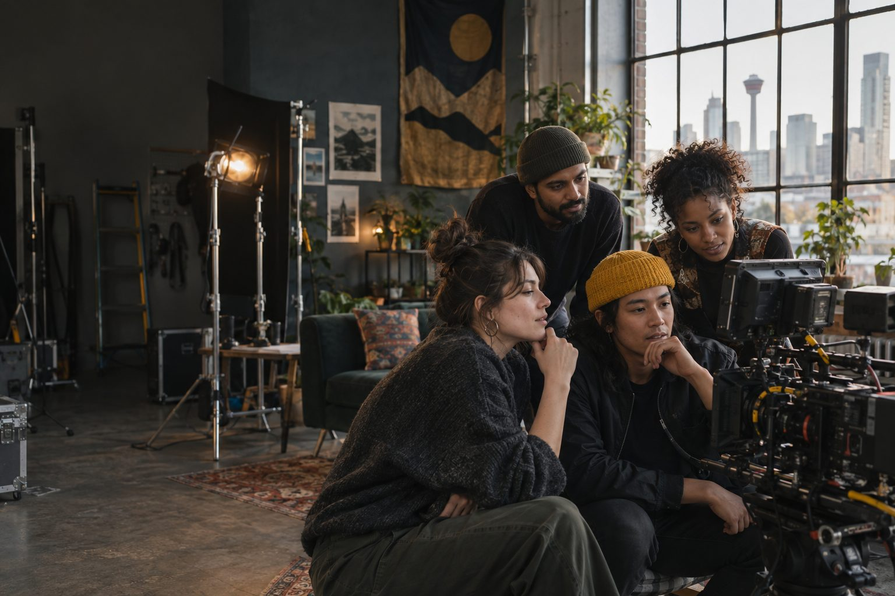
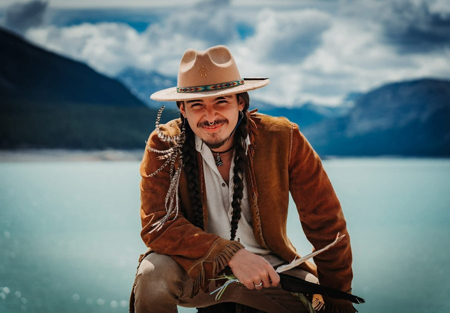

Built here. Grown here.
Alberta’s creative talent has never been the problem.
The problem is access. Homegrown is a community-led arts and media collective helping emerging creators learn, build, publish, connect and earn—without having to leave home to thrive.

Built here. Grown here.
30Artists paid
10Community events in 2025
02Programs in development
Early proof that local creative infrastructure creates visible results.
The Homegrown pathway
One connected path.
Every stage closes a gap between creative potential and a sustainable career.
- 01
Learn
Practical education in storytelling, business and audience building.
- 02
Build
Mentorship and production support shaped around a real project.
- 03
Publish
A public platform that brings new work to Alberta audiences.
- 04
Connect
Relationships with peers, mentors, funders and industry partners.
- 05
Earn
Fair, paid opportunities that help creative careers take root here.
Why this matters now
Alberta’s talent is already creating economic value.
The opportunity is not abstract. Culture contributes billions to Alberta’s economy, while emerging creators still face uneven access to production, distribution and professional networks.
View the 2024 cultural indicatorsPrograms and platforms
Opportunity, by design.
Programs for creators. Partnerships for organizations. Public value for Alberta.
Mentorship
SPARKS
Project-based mentorship for emerging storytellers, built around the support each creator actually needs.
Explore SPARKSPublic presentation
Short Film Showcase
A welcoming screen and gathering place for locally made work, new audiences and industry connection.
View showcase detailsIn development
Creative Accelerator
A proposed 14-week pathway connecting structured learning, production, public presentation and paid work.
The people behind the work
Built by storytellers, for storytellers.
Homegrown is guided by a small, hands-on team working across community building, program development and production. We build relationships first, then create the conditions for bold work to happen.
Guillermo Barraza
Executive Director / Co-Founder
Katelyn Barraza
Program Development / Co-Founder

Tyler McKinney
Production Director
November 6–7, 2026 · Calgary
The showcase for underdogs.
Experimental films. First attempts. Passion projects. The 3rd Annual Homegrown Short Film Showcase brings Alberta-made stories into a room full of people—and the filmmakers into a community ready to meet them.
Get your tickets
From $22 · Two-night pass $55
Screening night · $22
Films made here, seen together.
Watch Homegrown’s official selections from across Alberta, then stay for a filmmaker panel and audience Q&A.
- Friday, November 6
- cSpace Marda Loop
Industry night · $42
Meet the people behind what comes next.
Connect with local filmmakers and industry professionals over a curated panel, conversation, nibbles and a drink.
- Saturday, November 7
- Stonyslope Brewing Company
Make room for someone else. Add a pay-it-forward ticket at checkout and Homegrown will help it reach a community member who wants to be in the room.
Purchase or pay a ticket forwardWatch Homegrown
Stories from the work—and the road there.
Meet the people, projects and growing community behind Homegrown through films, recaps and an honest look at what it takes to build creative infrastructure in Alberta.
Visit our YouTube channelStart here
What is Homegrown?
Meet the collective, the community behind it and the belief that every story deserves room to grow.
Watch on YouTubeCommunity in motion
2025 Short Film Showcase
Look back at a two-night celebration that brought local filmmakers, audiences and industry into the same room.
Watch on YouTubeFollow the journey
Road to Creative Caravan
Go behind the scenes as Homegrown works toward Alberta’s first mobile media workshop.
Watch on YouTubeSPARKS mentorship · 2027
Move your project forward with the right people around it.
Nine emerging storytellers. Three cohorts. A growing pool of cross-disciplinary mentors. SPARKS brings practical, project-based support to creators across Alberta.
Direct community support
Give emerging stories room to grow.
Your donation helps Homegrown remove barriers to mentorship, production, public presentation and paid creative opportunities for Alberta creators.
Support Homegrown today
Donate through Zeffy, our fee-free fundraising platform, so your full contribution supports the work.
Make a donationHomegrown Arts & Media Collective cannot issue charitable tax receipts.
For funders and partners
Back the infrastructure behind the story.
Help remove cost and access barriers through a clear lane: fund a cohort, sponsor public programming, or create a fair paid opportunity for Alberta talent.
See partnership pathwaysA role for every supporter
Build the next creative success story.
Let’s build a stronger creative future without asking Alberta’s talent to leave home to find it.